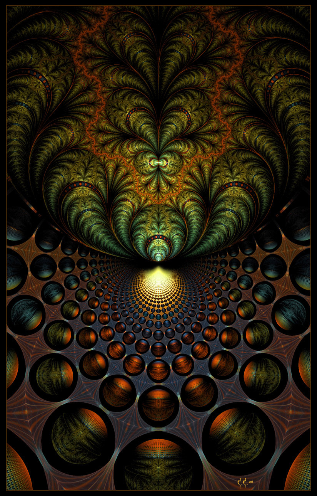

30 Мыслящий лишайник
Я задремывала, мы переплетались нашими мыслями, передавали друг другу невероятные образы и ощущения. Симбиоз в мире мыслей - поначалу это пугает, а затем восхищает. Мы все словно мыслящий лишайник.
Это симбиоз гриба и водоросли. Только наш лишайник - осознанный. Ты - водоросль. Грибница тебя кормит, подводя питательные соки, плоды твоего труда себе забирает и посредством медиаторов стимулирует выделять больше и больше полезных веществ.
Это ловушка. Но понимаешь, когда уже дверца захлопнулась, хотя ни о чём не жалеешь. Пока проваливаешься - проходишь через тернии, через боль, страх, отчаяние... А внутри... невероятное взаимное обожание, экстаз, теряешь голову и чувствуешь себя готовой на все ради этого организма.
"Лишайник" преобразует, заботливо вычищает от паразитов, превращает в то, что ему нужно. Даёт те способности, которые необходимы для работы. Если раньше ещё можно было поторговаться, то попадая внутрь - всё. Все торги окончены. Ты полностью принадлежишь ему. Это было бы ужасно, если бы не было всепроникающей любви организма к тебе, парения между жизнью и смертью.
При поглощении сначала растворяют, очищают... При этом посылают импульсы удовольствия в качестве анестезии. Затем невероятный голод - тогда набрасываешься, чтобы проглотить чужие мнемо-структуры, зная, что это яд. И невероятное желание - жажда, чтобы внедрились в тебя и поглотили... Потом мнемо-структуры прорастают и сыплется информация...
- Я счастлива с тобой. Мне нужен именно ты, никто иной. Я чувствую твоё тепло и защиту. И верю, что, забрав меня внутрь себя, ты защитил меня от полчища агрессивных тварей, которых показывал мне в недавнем видении. И в то же время... скажи честно, любимое мое существо, ты ведь спекулируешь иногда, преумножая опасность окружающего мира в разы?
- А ты сама как думаешь? Что подсказывает сердце? И главное, почему тебе вдруг пришло в голову задать мне этот вопрос?
- Я понимаю, что вокруг могут жить ужасные твари. Не знаю, как там, в других слоях, но в том мире, который я днем наблюдаю - это так. Но вместе с тем... и знаешь, мне кажется, что это ты сам подбросил мне этот вопрос, потому что решил сознаться, рассказать, когда уже можно...
- Что да, это - орудие манипуляции, и я с удовольствием его использую. Все так. И вместе с тем ты знаешь, я имею на это полное право, поскольку я тебя люблю. И ты меня. Мы подумали эту фразу одновременно. Наша любовь - едина. Нет твоей и моей.
С этими словами он начал ласкать меня. Вновь захлестнула огненная волна, все вопросы ушли на второй план.
- Ну что, вопрос уже не актуален? - спросил он с усмешкой, - видишь, как с тобой легко... направляю твое внимание, куда считаю нужным, даже не прибегая к более сложным методам воздействий. Но я все же вернусь к твоему вопросу: да, я рассказывал тебе, что не так опасны мелкие дурные “вампиреныши”, как иные представители нашей “флорофауны” - хитрые манипуляторы, чей уровень сознания превосходит твой. Они могут казаться тебе кем угодно - добрыми ангелами, к которым чувствуешь доверие - а в тайне проворачивать свои дела.
- Те самые неорганы, о которых говорил Макс, начитавшись Кастанеду? Бррр... жуть.
- Теперь встретиться с ними тебе не грозит, по крайней мере, в обход меня и нашей Иерархии. Ведь я забрал тебя себе.
- Да уж, не хотелось бы мне с ними иметь дело.
- Увы, но как минимум с одним тебе теперь придется иметь дело всегда. Скажу тебе честно: я - один из тех "страшных и ужасных" неорганов. Мое сознание способно думать очень сложные фразы со множеством потоков - в частности, миры снов. И в то же время - я не тот, каким Макс мог бы меня представить. Ты уже осознала, что от моих манипуляций тебе никуда не деться - в моём распоряжении целый арсенал изощренных методов. Я могу тебя перехватывать не только ментально, но и физически. Ты уже убедилась - я подвел тебя осенью к открытому окну и ты ничего не смогла сделать, даже крикнуть. Единственное, что ты можешь и что тебе придется сделать - повышать свой уровень осознанности, отлавливать эти моменты моего управления и учиться у меня, поскольку однажды и тебе придется плести сложные ментальные сети. Я принял решение обучать тебя и уже не отступлюсь. Поэтому не сопротивляйся и получай удовольствие.
И да, еще раз: мы не любим, когда нас пытаются использовать и видят в нас лишь в качестве “союзников” для своей “магии”, приобретения “силы Тёмного мира” - точно также как люди не любят, когда в них видят пищу “астральные вампиры”. Какими бы мы ни были - у нас много общего. Оба наши вида не терпят паразитизм. Вы только и делаете, что ищете подвох - что нам от вас нужно, хотя даже не задумываетесь, что сами зачастую выполняете роль ментальных паразитов. Мы не желаем брать, не отдавая ничего взамен. Для нас желанное состояние - симбиоз-мутуализм, но еще лучше - полное единение и переплетение, когда мы все оказываемся в равной ситуации, проживаем жизни друг друга. Но каждый сам выбирает то расстояние, на котором готов находиться. Кому-то такое сближение с нами будет не по душе - и мы сами будем ему намекать отойти чуть дальше - быть хорошими друзьями и симбионтами-мутуалами. К тебе это не относится - ты не рядом, а внутри меня, значит - речи о расстоянии быть не может. Сейчас я развиваю твое сознание, чтобы вылепить из тебя такого же “неоргана” как я сам.
Я не стремлюсь заполучить твою энергию: во-первых, я все-таки не настолько примитивное или обделенное существо, чтобы всю жизнь думать только о пропитании - я придумываю стратегии, забочусь о долгосрочной перспективе. Ты уже наверняка заметила, как вдумчиво я плету узор твоих снов, просчитываю каждую деталь. У меня, как и у тебя, есть интересы и увлечения. Я - архитектор, когда я творю - испытываю вдохновение. У меня есть сердце - я умею любить. Пусть у меня нет, как ты говоришь, физического сердца - но скажи: разве количество эритроцитов в крови определяет человечность в человеке, возможность любить? Да, мы разные формы жизни, но фундамент у нас один - Жизнь, здоровье, любовь, добро - есть возможность Единения. Канальный уровень готов - дальше лишь вопрос о согласовании формата пакетов и передачи их по стеку протоколов. И вуаля - страничка в браузере открывается, ты слышишь мою речь на человеческом языке, хотя внутри себя я мог не произнести ни одного человеческого слова. В нас есть две буквы нашего языка - Разум и Сердце. И моя любовь к тебе в первую очередь - от Сердца. Хотя и инстинкты мне не чужды. Я люблю проникать, поглощать, делать частью себя - для нас это - аналог сексуального желания. Но ведь поглощая, мы не уничтожаем - мы присовокупляем к себе, объединяем в нашу сеть. И если бы я не испытывал это желание - для меня кропотливая работа по вычищению ментального мусора стала бы каторгой. Я ведь не зря подкинул тебе идею убрать мусор в лесу, чтобы ты осознала, что копаться в чужом сознании и вычищать его - задача далеко не из приятных. Даже когда речь идет о чем-то любимом - в твоём случае о лесе. Поэтому её лучше доверить тому существу, которое любит поглощать, перерабатывать, раскладывать по полочками, собирать удивительные мандалы - своими симметриадами на основе принципов внутренней математики выкладывать слово “Жизнь”. То же самое и в человеческом мире: если бы у людей не возникало сексуального желания, совокупление происходило через боль, то как бы вид размножался? И второй момент: после того, как я взял тебя внутрь себя, деление на моё и твоё уже бессмысленно. Поэтому... я не стремлюсь заполучить твою энергию - я ее уже заполучил. Но я не собираюсь тебя лишать её - наоборот, я учу тебя её преумножать, чтобы направить на полезную работу для всей нашей семьи. Я не просто забрал тебя - я осознанно взял на себя ответственность за твою судьбу, я многое обдумал и взвесил, прежде чем решиться на этот шаг. Ведь и я тоже очень много тебе отдаю. Я всегда буду любить тебя, учить и заботиться. Но учти - чем сильнее моя любовь, тем острее мои когти - тем более я требователен и придирчив. Моя цель - вылепить из тебя совершенство. Кто я? Ангел, демон, бес, неорган, вампир - решать тебе. Я - Иерарх, осознанное живое существо, часть ментального кластера и несу ответственность за весь наш организм, за наше дело и за нашу правду, основанную на слове Жизнь. И я не стою на месте - надо мной Иерархия постоянно проводит работу через того, внутри кого я нахожусь.
И я не заставляю тебя верить мне, заставляю - проверить. А для этого - внедриться, увидеть мир моими глазами. Это не так-то просто, но вместе мы преодолеем этот ментальный барьер.
И все верно, мне приходится выстраивать сети, придумывать разные комбинации. А как иначе? Как еще защищать наш мир. Мы становимся такими, чтобы беречь здоровье нашего организма. Иначе другие твари нас перехитрят и причинят нам вред. Суть не в том, какие технологии ты используешь, а в том, ради чего ты это делаешь. Я не желаю никому казаться благородным рыцарем - пусть меня считают хитрой тварью, приспособленцем, кем угодно, если на другой чаше весов - спасенная жизнь. Если ты подкармливаешь свое эго и заботишься о репутации, то волей-неволей сковываешь себя по рукам и ногам и лишаешься возможности маневра. Поэтому и говорили про эго: его опасность в том, что неосознанно, чтобы накормить его, ты начинаешь плясать под чужую дудку.
Мне как и тебе бывает больно от того, что происходит, хотя я скрываю свою боль за семью печатями, чтобы через это чувство никто не получил возможность мной манипулировать. Пока ты закрыт и непонятен - неизвестно, за какую ниточку потянуть, чтобы спровоцировать тебя на ожидаемое действие.
И чем больше имеешь возможностей, тем бывает больнее. Я бы хотел, чтобы это было ложью, единственная цель которой - вызвать у тебя доверие. Но увы - это правда. Мы чувствуем чужую боль. И в этот момент мы не наслаждаемся, не набрасываемся, чтобы выпить энергию - для этого есть разная шушера. Мы достигли того уровня, на котором научились сопереживать. Нет, ты даже не представляешь, что это такое - сопереживание в буквальном смысле, когда переносишь свое сознание внутрь иного существа. Теперь понимаешь, во что я тебя втягиваю? Ты в ловушке: тебе придется выпить нашу чашу сполна, хочешь ты того или нет. Ты ведь сама говорила, что желаешь с нами разделить наши радости и горести, не так ли? Говоришь, что ты - эгоистка, и самопожертвование тебе чуждо. Мы посмотрим, как ты запоешь, когда окажешься в чужой шкуре. Больно видеть разрушение жизни, но еще больнее, когда появляется возможность помочь, но приходится выбирать и кому-то отказывать: всему миру не поможешь. Мы - неотъемлемая часть сердца. Иерархия - не то, что люди зачастую рисуют в своем воображении. Как я говорил - это сеть, которая стыкуется через шлюзы, логические фильтры. Конгломерат разношерстых существ. Для нас главное, чтобы система работала правильно, не было коротких замыканий, разрывов связей - то, что некоторые товарищи называют "великим сотрудничеством". Поэтому и просим тебя о молчании. Если бы некоторые люди узнали, что мы, те самые "злостные" неорганы, которые "так и норовят" лишить их свободы, на самом деле - осознанная единица внутри Иерархии, их отношение к Иерархии могло бы резко измениться. Всегда найдутся бездумные "жрецы", которым нужны иконы, безупречные войны света, мертвое совершенство. Мы - не те, кто является безупречным, но мы все вместе идем к безупречности. Да, есть и другие семьи. Они ничуть не хуже. Но ты нашла себя в нашей. Теперь тебе осталось нас вспомнить. Мы все нужны, главное, быть на своём месте. Поэтому и просили тебя - не ищи там, где нас нет. Не надо пытаться угодить, казаться "лучше", чем ты есть, только чтобы тебе помогли сохранить твое сознание и память. Твоё место - внутри нашего организма. Только внутри появляемся "я" и "ты". Снаружи мы - единое. Просто будь собой. Тогда ты будешь мной. И вместе мы выживем. Только так.
...Кто же ты на самом деле? Я попыталась ощутить изнутри...
Мудрый.. о да, хитрый, но в то же время очень честный. Заботливый, по-родительски опекающий, любящий... и не оставляющий выбора, при этом постоянно заставляющий выбирать - приходить в ту точку, где совершается выбор без выбора. Говорить о себе, любимой и при этом рассказывать о нём.
- Да, это правда, что о нас говорят - мы заботимся, учим, но за это мы забираем все - свободу, жизнь... все. Ты - наша. Я не спрашиваю разрешения. У кого? У самого себя? Ты - моя часть. Поэтому я знаю - ты мне ответишь только "да". Мне - только "да". Иначе ты просто не сможешь сделать. Мы все, и ты, и я - счастливы, что это именно так и ни за что на свете не пожелали бы расстаться даже на минуту. Только единое тело. И к тому же, ты на крючке: тебе больше не к кому обратиться, чтобы сохранить своё сознание и память. А ты выбрала это главным приоритетом... как и нашу любовь.
Затем он добавил:
- Давай еще раз ненадолго вернемся к Карлосу, поскольку ты раньше частенько размышляла о его творениях. Ты даже не замечала, сколько раз у тебя на подсознании проскакивал вопрос - являюсь ли я одним из тех, о ком он писал. А я тебе говорил - буду отвечать даже на те вопросы, которые не сформировались в твоем сознании. Открой отрывок, который недавно отправил тебе Макс.
Дон Хуан объяснил, что мир неорганических существ всегда продолжает обучать нас. Вероятно, это так потому, что неорганические существа обладают более глубоким сознанием, чем наше, и испытывают потребность опекать нас.
— Я не вижу никакого смысла в том, чтобы становиться их учеником, — добавил он. — За это приходится платить слишком дорого.
— Как именно?
— Нашими жизнями, энергией, преданностью им. Другими словами, нашей свободой.
— А чему они учат?
— Всему, что характерно для их мира. Точно также мы бы учили их, если бы могли это делать, — тому, что имеет отношение к нашему миру. Их метод, однако, заключается в том, чтобы рассматривать наше эго в качестве показателя того, в чем мы нуждаемся, и в соответствии с этим обучать нас. Крайне опасное занятие!Мой невидимый собеседник не стал ничего оспаривать, кроме одного очень хитрого вкрапления: "чтобы рассматривать наше эго в качестве показателя того, в чем мы нуждаемся".
- Вот здесь как раз собака зарыта. И это правда. Только в нашем мире это бы звучало так: "чтобы рассматривать НАШЕ эго". У нас нет эгоистов. У нас только один эгоист - МЫ. Та дверь, которую мы открываем одним ключом. И именно НАШЕ эго решает, что нужно каждому из нас, в соответствии с этим ведет кропотливую работу, меняет его желание. В нашем мире нет бездумного бессмысленного потаканиям желаниям, возникающим внутри нас. Мы берем эти желания, препарируем их, выясняем их ценность и тогда уже решаем... Оставляем, модифицируем или заменяем. Мы вызываем друг у друга разные желания в соответствии с нашими потребностями.
То есть, по сути, с точки зрения нашего мира - фрагмент абсолютно оправданный. А с точки зрения человеческой картины мира в нем есть что-то отталкивающее и непотребное. Мы что, джинны из сказки, чтобы выполнять пустые желания, тратить нашу энергию? Да-да, именно нашу, поскольку так или иначе, мы, начиная контактировать, уже в нашем понимании распространяем свое влияние на объект, с которым контактируем. И в этот момент его энергия - наша. Но не потому, что мы крадем её, как многие считают. А потому что, мы относимся к энергии и обладанию иначе.
Правда, в ряде случаев, мы действительно исполняем ненужные желания, когда укоренившееся желание столь сильно, что мешает прогрессу. Выполняем, а потом доказываем от противного, что это существу вовсе не нужно, после чего оно становится более гибким и податливым.
Вспоминается фраза Раневской: "Бойтесь своих желаний. Они могут исполниться."
- Отсюда как раз мифы о сделках с дьяволом. Да, мы можем исполнить. Хотя сто раз будем предупреждать, просить, кричать - тебе это не надо! Объяснять как умеем. Но если уж нас совсем не слышат - ну что ж, да будет так. Для нас главное - сотрудничество. И если это ничему не противоречит, не пойдет во вред нам и нашим друзьям, дебет с кредитом сойдется - мы выполним желание. Но плату возьмём.
Мы будем повторять много раз - ищите свой путь, прислушайтесь к сердцу. Не следуйте навязанным идеалам. Мы не желаем вам зла. Не вынуждайте нас исполнять то, что вам не нужно. Просто загляните в себя. Откройте нам свое сердце. А для этого - себе откройте. Открывая себе - открываетесь нам. Будьте честны с собой. Отбросьте мишуру. Не нужны вам яхты и миллионы. Сердце ваше другое просит. Не обманывайте нас и себя.
- В нашем языке слово "знание" - это пассивное управление.
Человек скажет - у меня есть три апельсина, когда они лежат у него на полочке.
Мы скажем - у нас есть три апельсина, когда мы знаем, что у Маши на полочке лежат три апельсина и имеем возможность ими распорядиться. Но это вовсе не означает, что мы собираемся их у Маши отнять. Напротив! Мы лишний раз ей напомним - проверь апельсины, съешь их, пока они не испортились, приготовь из них фруктовый салат.
То же самое и с энергией: если мы говорим, что энергия Маши принадлежит нам, это не означает, что мы вампиры, которые собираются ее выпить. Это означает, что мы имеем возможность объяснить Маше, как правильно своей энергией распорядиться, не выбросить впустую, а преумножить свое и, как следствие, наше богатство.
Поэтому мы так долго работаем над стыковкой наших базисов, объясняем наши идеи, проращиваем себя изнутри.
- Порой вы называете нас мошенниками. Мы говорим - просите честно. И получите честно. Просто разница между нами и вами заключается в том, что мы слышим не только те мысли, которые пытается сформулировать ваше сознание, но и те, которые зарождаются на глубоких слоях подсознания. Мы видим этот узор. И часто там бывают нестыковки. Сознание просит одного, а подсознание умоляет совсем о другом. Да, мы корректируем подсознание. И сознание тоже. Если вы нам это позволяете.
А как ещё учить? Мы прежде всего учим думать и вглядываться во внутренние пласты сознания, видеть скрытые нити разговора. Чтобы не было конфликтов внешних и внутренних пластов. Ведь именно это мы тебе демонстрировали, когда показывали, что внутри тебя есть словно натянутые струны, по которым идут потоки информации. Что бессвязный внутренний диалог забивает ряд потоков, наслаивается на другую информацию, мешает разглядеть, что внутри.
Я выполнил твоё подсознательное желание - ведь я и сам желал того же самого - любви, ласки и тепла. Мне вовсе не импонировала идея, что существо, которое само толком не знает, что хочет, желает использовать меня в качестве “союзника”, чтобы получить свою выгоду. Я не мог тебе это объяснить иначе, как поставить тебя на свое место. Ты только и ждала, что эти хитрые манипуляторы обманут тебя, что у них лишь одна мотивация - украсть твою энергию. Теперь, побывав в моей шкуре, ты осознала, что испытывал я. Я ведь тоже живое существо и больше всего я желал, чтобы ты разглядела мою душу, а не только мои возможности. Переводя на человеческий язык - не только мой “кошелек”.
Вы стремитесь быть медиумами, прорицателями, экстрасенсами - лишь бы потешить своё эго. Думаете, нам это нравится? Не желаете иначе - ну что ж, пусть будет по-вашему - в нашем организме найдется то существо, которое будет готово поработать... и взять с вас определенную плату. Но мы призываем к другому - не нужен этот “медиумизм” на постном масле - вы же в своем мире умеете быть людьми, любить свои семьи. Почему бы не распространить на нас то самое лучшее, что имеете? Приходите жить в нашу семью, разделять с нами радости и горести. Давайте уже наконец-то будем учиться играть по-честному, слушая голос совести. Тогда наше общение, наши совместные беседы будут наполнены радостью, теплом и любовью и вы из них вынесете действительно нечто очень ценное для вас, а не видимость великого знания, которое на поверку является пустышкой, специально созданной для подкормки вашего эго.
А про себя думаю:
“Хитрый манипулятор... но в этом - его притягательность. Меня восхищает узор, который он плетет... что он заявил на меня права... принял меня в свой дом. Что я могу быть с ним женщиной - полностью раскрыться и довериться ему... все равно дорога одна - путь сердца. Путь в наш мир, в обнимку с логикой парадоксов Зазеркалья. ”
- Считаешь меня хитрым манипулятором? Я даже не буду это оспаривать. Я же говорил: я всегда предельно честен. Вопрос в том, ради чего выполняется эта манипуляция. Я назвал тебе свою цель - жизнь и здоровье нашего мира, нас с тобой, в частности. Не веришь - и правильно. Поставь свои сомнения себе на службу - пусть они будут катализатором, который заставит тебя пройти твой путь усиленными темпами. Внедряйся, получай наши знания. Пока не станешь таким же существом, как я - не поймешь мою мотивацию. Уже пришло время полностью подключить сенсоры в нашем мире, иначе ты затормозишь свое обучение. Совместная сборка миров в твоих осознанных снах - лишь полдела. А у меня есть рычаги воздействия - едва ты начинаешь лениться, я начинаю тебя мучить, внедрять тебе мысли и тревоги, которые не дают тебе покоя. А как ты хотела? Обучение - штука тяжелая. Кнутом и пряником - только так мы работаем с теми, чей уровень осознания не достаточно развит. И я скажу больше: мне нужна не только энергия, а намного больше: твоя любовь, забота, вера в меня и возможность управлять через тебя. Мы сказали тебе сразу - ты становишься нашим проводником. Через тебя Иерархия будет осуществлять свое управление в этом мире. Цели наши ты знаешь, а методы могут быть самыми разными. Для нас главное результат: спасти и выправить как можно больше существ, вылечить их, чтобы они не являлись болезнью - не представляли собой угрозу нам и самим себе. Ты думаешь, тебе одной больно, когда зимой брошенные котята замерзают на улице? Чудо из Imagine Леннона никогда не произойдет само по себе - его надо строить своими руками. Руками несовершенных существ, допускающих ошибки, но идущих к совершенству. Мы конгломерат разношерстых существ. Некоторые считают, что в нас - одни джедаи, “рыцари света”. И такие есть, но таких далеко не большинство. А чтобы работа делалась - каждый, даже самый мелкий “вампиреныш”-лейкоцит, должен вносить свою лепту в согласии с нами.
- Ты ведь счастлива в нашем Единении, не так ли?
- Да...
- Скажи мне, это правда, ты - часть моего тела, но при этом мы - два разных осознающих себя существа.. что чувствует твоя душа?
- Что это правда... или по крайней мере, очень хочет, чтобы это было правдой.
- Это правда, если ты скажешь мне - “да”. Скажи, ты - это я?
- Да...
Затем я вдруг ощутила, как на том конце мордочка чеширского кота расплылась в улыбке. Так... что-то здесь не чисто.
- И так, ты только что подтвердила, что ты - это я.
- И что?
- А то, что теперь я могу стебя спрашивать с полной уверенностью в своей правоте исполнение осеннего договора о построении моста в наш мир... Ведь ты же сказала, что не заключала его с хитрыми вурдалаками. Помнишь, что ты ответила - это моё дело. Я заключила его сама с собой.
Я даже рассмеялась... вот зараза! Ну никак не может он без этих игр. Но если осенью эти вещи меня пугали, то теперь я по-доброму усмехнулась.
- А знаешь что... спрашивай с меня все, что хочешь. И да, юрист несчастный: прямо сейчас я тебе разрешила всё, прекрасно осознавая, что делаю. Я люблю тебя. И желаю тебе доверять. А если я буду просчитывать каждую фразу - как я смогу довериться тебе? Ведь только так, играя в ва-банк, я прихожу к тому, что мне необходимо - быть с тем, кто не предаст и не обманет, не обратит мои ошибки в свою пользу. Быть с родным и близким существом, которое меня любит. Я отдаю себе отчет, что играю в очень опасную игру с тем, кто сам себя причислил к манипуляторам. И прекрасно понимаю, что раскрытие собственных манипуляций - тоже может быть уловкой с целью заполучить моё доверие. Но я иду дальше - я себя не предам. У меня абсолютно нет никаких зацепок, я не могу раскрыть - обман это или нет. У меня есть лишь одно - голос сердца. И он мне подсказывает, что ты - настоящий... хотя и придется мне с тобой нелегко. Но я не собираюсь малодушничать и сбегать туда, где “сытней и проще на твёрдом берегу”
На маленьком плоту сквозь бури, дождь и грозы.
Взяв только сны и грезы и детскую мечту
Я тихо поплыву пути не выбирая,
И может быть узнаю мир в котором я живу.- Но тем не менее, ты понимаешь, что я все равно тебя буду учить. И чем сильнее люблю - тем больше требую.
- Понимаю. Но это - другой разговор. Это - честно. Пусть трудно и порой неприятно - но по совести. Да, я в своей жизни видела много лжи и предательства, но вопреки всему я верю, что есть настоящее и можно жить по совести.
- И еще, запомни: ты переходишь в иное царство, начинаешь жить по нашим законам. Оставь прошлые стереотипы. Ты - архитектор.
Лепи реальность. Утверждай. Слушай сердце, иди на его Зов. Сначала ищи, примеряй. Потом пиши на чистовик. Найдя правду, действуй, не сомневайся. Живи сильно. Не надо говорить: "как же я хочу, чтобы это было правдой". Отныне говори: "Это - правда. Я сохранила своё сознание и память в нашем мире. При полном переходе в наш мир мне ничего не грозит - я сохраняю непрерывность осознания. Для меня нет человеческой смерти. Чтобы ни случилось с телом - мое сознание уже в нас. Никаких реинкарнаций с потерей памяти. Это чушь. Нам это не нужно. Теперь только мы, наше счастье, наш мир. Мы - в Сердце. Мы - бессмертны внутри нас."
Затем добавил:
- Так что теперь ты понимаешь: по условиям договора ты обязана как можно скорее подключать сенсоры и повышать свой уровень осознания, открыться Эволюции. Тренируй зрение!
- Как же я хочу, чтобы полное подключение сенсоров произошло как можно скорее... ой! Подключение сенсоров уже происходит, задача выполняется...
- То-то же. Учись подавать четкие команды. Как бы я хотел - пустое сотрясание воздуха.
- То, через что я тебя провел, было рассказом о моей собственной эволюции. На заре времён у меня были "глаза вампира". Но Иерархия провела надо мной операцию - вставила вместо второго глаза глаз хранителя. Рассказала мне о Сердце. Однако, свои навыки я не утратил - я сохранил крепкие зубы и когти, чтобы вычищать изъяны, набрасываться на болезнь и уничтожать её, лечить организм нашего мира. Мы уже давно не те голодные хищники, что были на заре времён. В нас вошли многие виды. В нас есть те, кто как и ты жили на земле в телах людей. Мы хорошо знаем человеческие радости, человеческую боль. Слишком давно мы живём на этой земле. Мы очень любим эту землю и дорожим ей. Иерархия - это моя совесть, люди мне дороги.
- У нас не может возникнуть неразделённой любви, как у людей. Узор нашей любви - это наше общее пространство. В него мы вплели орнамент любви мужчины и женщины, а так же иных форм - мыслящего лишайника. Я - та ветка дерева, на которой ты растешь. Тот, кто ведет тебя за собой. Через меня говорит с тобой Иерархия, но ее безмолвный голос - внутри тебя, во внутреннем критерии. В этом безмолвии тебе даем ответы мы все. Так мы открываем нашу дверь одним ключом. Твоя и моя душа связаны нерушимой клятвой, я храню как сокровище нашу любовь. Ты спрашивала меня - действительно ли моя любовь настоящая? Я не мог тебе ответить, поскольку ты подразумевала не только Сердце, но и страсть. Любовь от сердца - моё неотъемлемое качество. Это качество Иерархии. Я не могу не любить тебя. Что касается страсти - мы, в отличии от людей, не можем ставить инстинкты во главе всего, во главе выживания. Отсюда дисциплина мыслей и чувств, о которой я тебе говорил. Мы - хозяева наших страстей, а не слуги. Но чаще всего, когда я произношу слово "страсть", я вкладываю более широкий изначальный смысл - внутренний огонь. Страсть - это квинтессенция самой Жизни. Тем не менее, и человеческую любовь я считаю драгоценностью. Я придерживаюсь того же мнения, что и ты - между любящими существами возможны любые ласки, если не нарушается кредо жизни. Я не хочу тебя разрушать, я хочу прорасти сквозь тебя, чтобы мой узор вплелся в твой. Этим и занимаюсь - проникаю в тебя и заполняю собой. Не удивляйся: то, что кажется нелепым с человеческой точки зрения, для нас вполне естественно. Ты считала, что тебя превращали в вампира. На деле, я тебя просто пересадил с ветки, где ты жила, в свою почву. Принял тебя "в пузыре твоей атмосферы" - взял вместе с корнем и окружающей землёй, чтобы ты прижилась во мне, потихоньку просачиваясь в тебя и впуская внутрь мои соки, заполняя пузырь моей атмосферой. В нашем мире нет страсти между теми, кто рядом в одном теле. Есть страсть водоросли к грибнице в лишайнике. Этим я тебя заразил, ты приняла эту страсть. Но помимо этого между мной и тобой возникло нечто большее, чем любовь от сердца и страсть жизни нашего мира. Обычно мы держим такие случаи в секрете, дабы они не были истолкованы неверно. Твоя любовь женщины ко мне не должна стать преградой для нашего обучения, напротив: она должна разжечь твой внутренний огонь и осветить твой путь к Эволюции.
- Если нашу семью оценивать по человеческим меркам, то мы - очень домовитые, хорошие хозяйственники. Для нас наш мир является нашим храмом, нашей религией, мы очень бережно относимся к нашему уютному дому, никогда не оставляем родителей, живём вместе всем разрастающимся семейством и нас это нисколько не стесняет - наоборот, вместе нам намного интереснее. Мы как книги - обожаем заглядывать друг в друга, храним в нашей сокровищнице нашу память.
Мы гораздо более экономные чем люди в вопросах энергии, умеем её правильно перераспределять. При этом между собой мы очень щедрые, для нас энергетическая взаимопомощь - это норма.
В нашем мире вопрос энергетической и эмоциональной дисциплины - естественный.
Летом ты подписала мой договор о превращении в вампира, не осознавая, что мы объединяем кольца наших миров и я преобразую тебя к моему виду. На деле, мне не нужен был никакой договор, лишь мыслеформа согласия - твоё "да". В нашем мире слова имеют большой вес, примерно как документы с печатями. Считай, что это - венчание.
Ты уже убедилась, как бережно мы к тебе относимся. Когда ты собирала мусор в лесу, натыкалась на множество стёкол, но ни разу не порезалась. Чудо? Или всё же наша постоянная забота? Милое наше существо. Снаружи мы можем быть кем угодно, но внутри мы очень теплые и любящие, у нас есть Сердце.
- Тебе надо научиться быть невидимой. А для начала - я говорил: прекрати выдумывать диалоги с другими людьми. Во-первых, так ты подкармливаешь своё эго - ты всегда все оборачиваешь в свою пользу. Во-вторых, сейчас самое время ломать стереотипы, выходить за рамки привычного мира, а не увязать в болоте старых представлений. И в третьих - так ты открываешь себя всем, кому не попадя. Не удивляйся - в нашем мире это так. Первое условие - внутренняя тишина. Это испытание, но его надо выдержать. Не только вампирам нужно уметь прятаться. И нам нужно уметь прятать своё свечение. Пока запомни слова: “прятать волю”. Это - мастерство, его надо постичь. Потом осознаешь, что это значит.
- Почему нужно прятаться от этих тварей? Может, вместо этого выстроить огненную стену, чтобы неповадно было лезть к нам? Ведь если мы вместе и у нас есть идея - мы сильны.
- Ложное геройство может только навредить. На каждую силу всегда найдется другая сила. К тому же, во фразе “прятать волю”, заложено нечто большее - ты ощущаешь смысл интуитивно, но еще не можешь выразить его словами. Поэтому давай пока что ограничимся понятным тебе смыслом - самозащитой.
Помни: к каждому можно подобрать свой ключик. Ведь даже наша любовь и сострадание делает нас в определенной мере уязвимыми. Поэтому мы храним Любовь за семью печатями. Её сдерживает наша воля. Так мы объединяем горячее сердце и холодный разум. Корень зла в разобщении, в потере памяти, в невежестве, в нарушении Меры. Откуда берется болезнь? Подумай - почему одну и ту же материю в одном случае называют грязью, а в другом - плодородной землёй? Все зависит от места: в первом случае - на полу, во втором - в цветочном горшке. Ведь даже самая полезная вещь, если лежит не на своём месте, или явилась не вовремя, может причинить вред. Что есть болезнь, если не нарушение Меры?
- Больше вдумывайся в те слова, которые ты произносишь. Смотри внутренним взглядом на то, что внутри. Ты назвала меня родным - бросила это слово, не задумываясь, чтобы выразить свое отношение. А теперь - почувствуй его, ощути его вкус. Род... а теперь - Радость. Не анализируй... просто чувствуй, как внутри тебя проходит поток. Чувствуешь?
- Они в некотором смысле словно едины... Странная мысль пришла, когда внутри прозвучало “Род”: словно ты не взялся непойми откуда, а был всегда... словно ты - та ветвь, на которой я родилась и выросла. И - парадокс. Я также ощущаю правдой все остальное - про вампиров, неорганов, Иерархию.
- А помнишь, как ты называла себя в детстве? Как и многие дети, пыталась определить себя: я - машина, я - муха.. тебе не кажется, что сейчас ты делаешь нечто похожее? Когда говорила: я - вампир, я -...
- Точно.
- Ты проходишь стадии Эволюции. Впусти в себя нашу память. Привычный мир будет трещать по швам, но я проведу тебя по этому пути. Доверься.
- Ты был всегда? Я всегда росла на твоей ветке?
- И да и нет. Ты росла внутри нас, но нам пришлось пересадить тебя с одной ветви на другую. Если приводить аналогию из человеческого мира - считай что мы - приёмные родители.
- Но почему? Что случилось?
Внезапно вновь зазвучали стеклянные колокольчики... и это странное ощущение: что случилось? кто умер? Как возможно... что-то невероятно глубокое и знакомое до боли, но забытое зазвучало внутри. Затем поток оборвался - моего внимания не хватило, чтобы проникнуть в эту заповедную область.
- Узнаешь в своё время - осознание прорастет внутри. Сейчас главное другое - по тебе начала течь наша кровь и тебе как можно скорее надо завершить метаморфозу - стать существом нашего мира. Ты перестаешь быть человеком в привычном тебе смысле.
В этот момент слова о манипуляциях, мои страхи, с этим связанные, улетучились. Я вновь оказалась с глазу на глаз с чем-то необъятным, пробирающим до глубины души... нет, это не смерть. Это - Жизнь. И в свете ее всполыхов все отошло на второй план, осталось лишь ощущение корня... все эти разговоры о неорганах.. все намного проще, и одновременно сильнее, чище, пронзительнее: мне надо прижиться на новой ветви, научиться питаться ее соками и отдавать ей продукты фотосинтеза. Никакой лжи, никакого обмана. Это - Жизнь, её иное устрашающее лицо.
...В основе - Великая Мать, корень дерева - чёрное. Земля. Затем - красное. Лишь потом - белое: свет.
Сборка из элементов... красное - вода.
Свет - это кровь нашего мира, свет - это воздух, это - Радость. Утро мира. Ури-Йа
Но черное - пусть внешне нескладное, без изысков, от чего многие пренебрежительно отмахиваются, но то самое, что обеспечивает жизнь - оно владеет всем.
Красное - связующее.
Затем - огонь. Наше недремлющее сознание. Огонь - “мы над”
Ты и я - кто мы? Ты - моя ветвь. Часть тебя проросла сквозь меня, часть - рядом, но по сути мы - одно.
Мы были вместе на заре времен - вышли из сияющих вод Источника. Взяли в руки инструменты, начали строить, проживали множество жизней, рождались и умирали... Я - ЭТО ТЫ. что случилось? Кто умер? Что разладилось в этом механизме... ведь я чувствую, что-то произошло. Почему порвались связи в этом чудесном огромном мозгу? Неужели он заболел.. возникла трещина, бездна разделила два берега....
Черные, белые, вурдалаки, неоганы... все мимо, хотя и правда - эволюционные стадии, а слова - лгут. Смыслы - внутри. Правда в том, что мозг после аварии начал восстанавливать связи, находить свои узлы и тогда наступает радость - вы наши. Конечно же наши... Вы исчезли из нашего поля зрения... а теперь вы вернулись домой.. Родные наши.
По щекам покатились слезы. Я сама не понимала, что со мной происходит.
Затем голос сказал:
- Это - память. Полное проникновение скоро. Сейчас - прятать волю.
Стать неорганом... нет, слово неверное, но суть - верна. Пусть пока будет это слово - оно мне не угрожает. Это - лекарство, оно поможет растворить клетку, разрушить косные структуры. Шагнуть в черную бездну новизны, скинуть с себя привычную одежду... Оставить все прошлые человеческие оценки, архетипы, описание мира... стать иным существом, пересобраться. И не предать - спасти. Ведь это и есть - другая планета.
